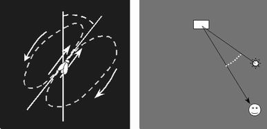

| inicio | | | | | @ | ||
Abejas asesinas
Como todas las anteriores, esta especulación que sigue carece de asidero científico. Es una mera conjetura de una mente divagadora, vana y disoluta, que escribe sin la guía de la equilibrada razón.
Es conocido desde hace más de un siglo que las abejas comunican de un modo muy curioso en qué dirección hay que volar, y durante cuánto tiempo, para aprovechar una fuente de alimento que hayan encontrado las exploradoras. La abeja autora del descubrimiento va a la colmena y camina repetidamente sobre la espalda de sus compañeras de trabajo mientras agita su abdomen, en una movida danza que realiza en una trayectoria en forma de ocho. Quizá segregue, a la vez, sustancias químicas.
El camino central de la trayectoria de la abeja que danza forma un cierto ángulo con la vertical. Ese ángulo es el mismo que debe formar la dirección de vuelo con aquélla en la que se ve el Sol en el cielo. La figura muestra a la izquierda una pared vertical de la colmena, y a la derecha el campo de trabajo visto desde arriba.
Es posible que las obreras que sirven de pista de baile tengan, cada una, una posición asignada, siempre la misma; y que cuando salgan conserven, en su vuelo, la misma formación. Las abejas que fueron pisadas en la rama central del ocho emitirán después, seguramente, algún olor que indica a todas hacia dónde hay que ir.
Para las abejas, arriba significa el Sol. Seguramente habrá una explicación de ese llamativo idioma; a lo mejor basada en que normalmente arriba está claro, y abajo oscuro.
Un hecho aun más extraordinario es que cuando el viaje es largo la exploradora corrige, en su danza, la posición real que tenía el Sol a la hora del hallazgo, y baila para donde se lo va a ver cuando finalice esa ceremonia y el enjambre esté en plena travesía. En centenares de millones de años la especie aprendió -podríamos hablar así por brevedad- cómo se mueve el Sol en el hemisferio en el que viven.
Hace veinte o treinta años se importaron del África abejas muy pacíficas, domesticables y laboriosas desde Sudamérica. Se cree que algunas se cruzaron con abejas locales, y resultó un espantoso engendro de abejas salvajes asesinas, que debieron ser exterminadas después de que causaran muchas muertes de humanos y animales, atacados sin motivo aparente por enjambres enfurecidos.
Hasta aquí, los hechos Y ahora, la divagación. Las abejas africanas tendrían sus instintos acomodados al movimiento aparente del Sol en el hemisferio norte, que es de izquierda a derecha (por eso los relojes, inventados en Europa, mueven sus agujas en ese sentido). Cuando se las trajo al Brasil, al Paraguay y a la Argentina, los pobres bichos no entendían nada. Una exploradora hallaba un plantío de apetitosas flores, iba entusiasmada a la colmena (disculpen este lenguaje antropomórfico; lo uso sólo por brevedad), comunicaba a sus compañeras su hallazgo, iban todas a buscarlo con grititos de alegría mientras se relamían de antemano (más disculpas), y no hallaban nada, porque viajaron en la dirección incorrecta.
Aquí el Sol marcha hacia la izquierda, y eso las abejas no lo aprenden en una generación, ni en cien; es un instinto que se hereda a través de decenas de miles de siglos de variaciones y selección natural. Las bichitas miraban alrededor, se preguntaban qué fue del abundante manjar prometido, y castigaban con dureza a cuanta persona veían, y también a animales del tamaño apropiado como para haberles robado su propiedad, sin atender razones astronómicas, hemisféricas ni genéticas.
Según esto, lo mismo ocurriría si lleváramos al norte abejas sureñas. Eso especulo y divago; no me atrevo a hacer esa prueba, ni a proponerla.
Recuerden que deben tomar lo que digo como un relato fantástico; esto no es ciencia, sino un divague feroz, una compulsión irrefrenable de hablar sin propósito. Cumplo en advertirles.

Izquierda: la abeja descubridora del alimento camina sobre las espaldas de sus compañeras, distribuidas en una superficie vertical, en el interior del panal. Derecha: Todas interpretan, sin necesidad de que las guíen, que deben convertir el ángulo que forma con la vertical la dirección central de la danza, con un ángulo horizontal. El arriba representa el Sol. La cantidad de veces que se pasea la descubridora representa la distancia.
| Publicado originalmente en http://www.elistas.net/lista/divagaciones/archivo/indice/21/msg/29/. Se permite su reproducción citando la fuente. Última actualización nov-2017. Buenos Aires, Argentina. |